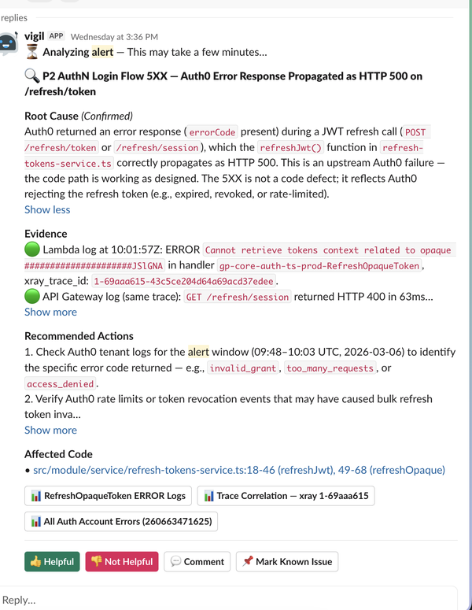
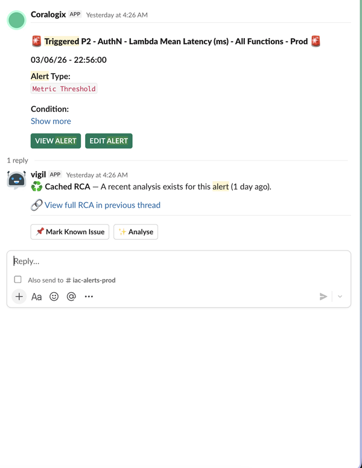

G-P | Intern Capstone
Intern Capstone Project
G-P Vigil
An Agentic Approach to Incident Triage
Sajal Bajaj | Software Engineering Intern
January 2026 - June 2026 | 6-month internship
1 / 8
G-P | Vigil
The Problem
Incident triage is slow, manual, and noisy
BEFORE Vigil
1. Alert fires in Slack
2. Manually search Coralogix logs
3. Switch to GitHub to find code
4. Cross-reference logs, code, docs
5. Write RCA manually
6. Each duplicate repeats the cycle
15 - 30 min per alert
AFTER Vigil
1. Alert fires in Slack
2. Vigil auto-analyzes logs + code
3. RCA posted in-thread
4. Team reviews & acts
71% of recurring alerts = instant cached response
~2 min fresh RCA | Cached = instant
Engineers switch across Slack, Coralogix, GitHub, and Confluence — spending 15-30 min per alert before starting remediation.
2 / 8
G-P | Vigil
The Solution
Vigil: AI-powered incident triage in Slack
HOW IT WORKS
Alert fires
Coralogix detects an anomaly and sends alert to Slack
Vigil intercepts
Ingests, deduplicates, checks cache & known issues
AI Agent investigates
Reads logs, scans code, checks runbooks
RCA posted in-thread
Root-cause with evidence & next steps — ~2 min
⚠ Coralogix
Alert
→
💬 Slack
Channel
→
Vigil Orchestrator
Ingester | Relay | History DB
→
Vigil AI Agent
RCA Skill | MCP Tools
→
✅ Slack
RCA
Cached RCA
Known Issue
Frequency Escalation
Coralogix MCP
GitHub MCP
RCA Skill
Orchestrator: Lambda | SQS FIFO | DynamoDB | API Gateway
Agent: ECS Fargate | Claude Sonnet 4.6 on Bedrock
🔒 PII scrubbed
🔒 Read-only GitHub
3 / 8
G-P | Vigil
Key Features
What Vigil delivers to on-call teams
Automated RCA
Reads Coralogix logs + GitHub code around the alert timeframe. Posts structured RCA with evidence and confidence levels in the Slack thread (~2 min).
Smart Caching
71% cache hit rate on recurring alerts = instant response. DynamoDB-backed fingerprinting with 15-day staleness. Click 'Analyse' anytime for a fresh look.
Known Issue Tagging
Engineers mark alerts as known issues with Jira links and custom comments. Future occurrences skip analysis entirely, reducing noise.
Frequency Escalation
Auto @mentions channel managers when an alert fires repeatedly beyond configured thresholds. Configuration-driven, per-channel control.

Actionable RCA

Cached Response
4 / 8
G-P | Vigil
Production Results
Measurable impact on incident response
1K+
Alerts analysed
across 8 teams
~2 min
Avg RCA
response time
58%
Bedrock cost
reduction via caching
4/5
Quality rating
from all pilot teams
Echoes
"Analysis is helpful and to the point."
Quality: 4/5 | Actionability: 5/5
Quasar
"Root Cause analysis, Evidence Gathering and Recommended actions are generally helpful and time saving."
Quality: 4/5 | Actionability: 5/5
IAC
"~40% bandwidth saved. Perf improvement, timeout handling, retry fixes prompted by Vigil are correct."
Quality: 4/5 | Actionability: 5/5
Pilot teams: IAC (Nebula & Tenacity), Quasar, Echoes | All teams recommend expanding
5 / 8
G-P | Vigil
Adoption & Onboarding
Getting teams started with Vigil
HOW TO ONBOARD
1
Request channel allowlisting
Open a Jira ticket to add your prod alert channel to the Vigil allowlist
2
Invite Vigil to your channel
Type /invite @vigil — starts listening instantly
+
Optional: Frequency escalation
Auto @mention managers when same alert fires 5+ times in 6 hours
ADOPTION TIMELINE
Apr 28
Quasar, Echoes — 6 ch
May 21
Rapidblazers, Legends, Rockumatica — 8 ch
Jun 1 – 11
Juggernauts + more — 10 ch
Apr 16 – Jun 11, 2026 | Zero-friction self-serve onboarding
6 / 8
G-P | Vigil
My Experience
Learnings, challenges & growth
Technical Learnings
- Agentic AI architecture (Claude Sonnet 4.6 on Bedrock)
- AWS serverless (Lambda, SQS FIFO, DynamoDB, SAM)
- MCP protocol integration (Coralogix, GitHub)
- Prompt caching & cost optimization (~90% savings)
- Skills-based modular agent architecture
Non-Technical & Challenges
- Owned a product from zero to production
- Cross-team collaboration across multiple engineering teams
- Learnt to document ideas and decisions
- Handled real production incidents & user feedback
- Balancing speed with reliability & enterprise security
"This internship gave me the rare opportunity to build and ship an AI product end-to-end in a real enterprise environment."
7 / 8